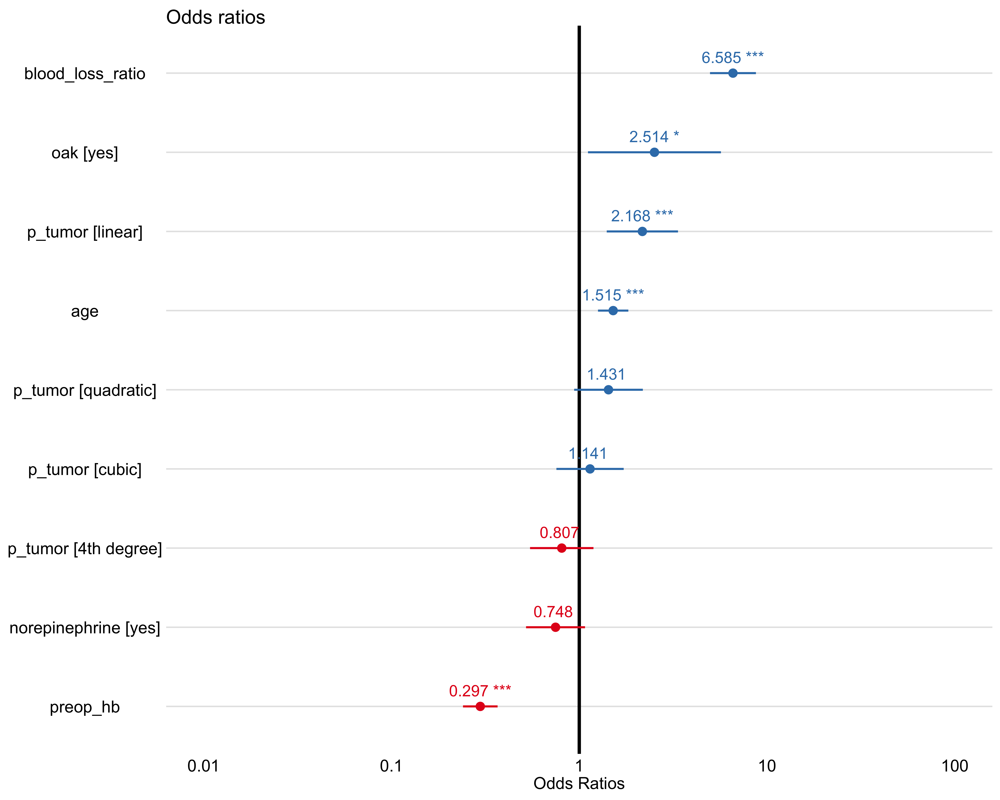

Models with intraoperative transfusion as response
Stepwise Logistic Regression
| (Intercept) |
0.3969 |
0.1491 |
-6.1960 |
0.0000 |
0.2949 |
0.5294 |
| oakyes |
2.5145 |
0.4159 |
2.2171 |
0.0266 |
1.0985 |
5.6550 |
| preop_hb |
0.2971 |
0.1083 |
-11.2100 |
0.0000 |
0.2388 |
0.3652 |
| age |
1.5154 |
0.0949 |
4.3787 |
0.0000 |
1.2617 |
1.8316 |
| norepinephrineyes |
0.7476 |
0.1845 |
-1.5770 |
0.1148 |
0.5207 |
1.0740 |
| p_tumor.L |
2.1679 |
0.2229 |
3.4712 |
0.0005 |
1.4032 |
3.3660 |
| p_tumor.Q |
1.4311 |
0.2149 |
1.6684 |
0.0952 |
0.9394 |
2.1831 |
| p_tumor.C |
1.1414 |
0.2105 |
0.6285 |
0.5297 |
0.7525 |
1.7194 |
| p_tumor^4 |
0.8068 |
0.1984 |
-1.0821 |
0.2792 |
0.5461 |
1.1902 |
| blood_loss_ratio |
6.5846 |
0.1437 |
13.1201 |
0.0000 |
5.0131 |
8.8088 |
| p_tumor |
1 / 0 |
0 |
1.2349888 |
0.3959609 |
Inf |
0.6582950 |
0.9186596 |
| p_tumor |
2 / 1 |
0 |
0.8258085 |
0.2601882 |
Inf |
-0.6074582 |
0.9371001 |
| p_tumor |
3 / 2 |
0 |
1.6710379 |
0.4087998 |
Inf |
2.0987926 |
0.1236627 |
| p_tumor |
4 / 3 |
0 |
1.6977139 |
0.4871272 |
Inf |
1.8446320 |
0.2131697 |
#> Warning: The `yardstick.event_first` option has been deprecated as of yardstick 0.0.7 and will be completely ignored in a future version.
#> Instead, set the following argument directly in the metric function:
#> `options(yardstick.event_first = TRUE)` -> `event_level = 'first'` (the default)
#> `options(yardstick.event_first = FALSE)` -> `event_level = 'second'`
#> This warning is displayed once per session.
#> Preparation of a new explainer is initiated
#> -> model label : Stepwise Logistic Regression
#> -> data : 115 rows 171 cols
#> -> data : tibble converted into a data.frame
#> -> target variable : 115 values
#> -> predict function : yhat.workflow will be used ( �[33m default �[39m )
#> -> predicted values : numerical, min = 0.00704458 , mean = 0.2955113 , max = 0.9999991
#> -> model_info : package tidymodels , ver. 0.1.1 , task classification ( �[33m default �[39m )
#> -> model_info : type set to classification
#> -> residual function : difference between y and yhat ( �[33m default �[39m )
#> -> residuals : numerical, min = -0.7274198 , mean = 0.0175322 , max = 0.9738698
#> �[32m A new explainer has been created! �[39m

Elastic Net Logistic Regression
#> Preparation of a new explainer is initiated
#> -> model label : Elastic Net Logistic Regression
#> -> data : 115 rows 171 cols
#> -> data : tibble converted into a data.frame
#> -> target variable : 115 values
#> -> predict function : yhat.workflow will be used ( �[33m default �[39m )
#> -> predicted values : numerical, min = 0.01726955 , mean = 0.2951403 , max = 0.9999944
#> -> model_info : package tidymodels , ver. 0.1.1 , task classification ( �[33m default �[39m )
#> -> residual function : difference between y and yhat ( �[33m default �[39m )
#> -> residuals : numerical, min = -0.7034869 , mean = 0.01790322 , max = 0.9577324
#> �[32m A new explainer has been created! �[39m
Random Forest
#> Preparation of a new explainer is initiated
#> -> model label : Random Forest
#> -> data : 115 rows 171 cols
#> -> data : tibble converted into a data.frame
#> -> target variable : 115 values
#> -> predict function : yhat.workflow will be used ( �[33m default �[39m )
#> -> predicted values : numerical, min = 0.00836172 , mean = 0.2907463 , max = 0.8754321
#> -> model_info : package tidymodels , ver. 0.1.1 , task classification ( �[33m default �[39m )
#> -> residual function : difference between y and yhat ( �[33m default �[39m )
#> -> residuals : numerical, min = -0.6476345 , mean = 0.02229717 , max = 0.9594582
#> �[32m A new explainer has been created! �[39m
Support Vector Machine (RBF)
#> Preparation of a new explainer is initiated
#> -> model label : Support Vector Machine (RBF)
#> -> data : 115 rows 171 cols
#> -> data : tibble converted into a data.frame
#> -> target variable : 115 values
#> -> predict function : yhat.workflow will be used ( �[33m default �[39m )
#> -> predicted values : numerical, min = 0.0129083 , mean = 0.2976744 , max = 0.9999929
#> -> model_info : package tidymodels , ver. 0.1.1 , task classification ( �[33m default �[39m )
#> -> residual function : difference between y and yhat ( �[33m default �[39m )
#> -> residuals : numerical, min = -0.7628738 , mean = 0.01536906 , max = 0.9726944
#> �[32m A new explainer has been created! �[39m
Feature importance

Optimal cutpoint
(#tab:ml_cutpoint_table)Optimal probability threshold by absolute distance to optimal model (sensitivity and specificity = 1
| Stepwise Logistic Regression |
0.3201714 |
0.7923708 |
0.7908440 |
0.0082724 |
| Elastic Net Logistic Regression |
0.3174359 |
0.7930836 |
0.7918560 |
0.0091146 |
| Support Vector Machine |
0.3149697 |
0.7945120 |
0.7951261 |
0.0092939 |
| Random Forest |
0.3494245 |
0.7849229 |
0.7846765 |
0.0131046 |